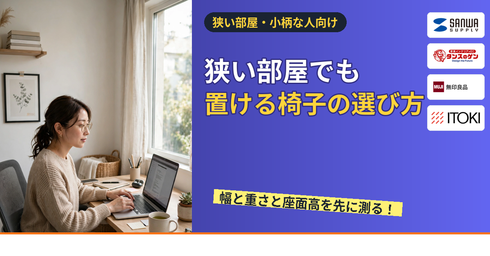
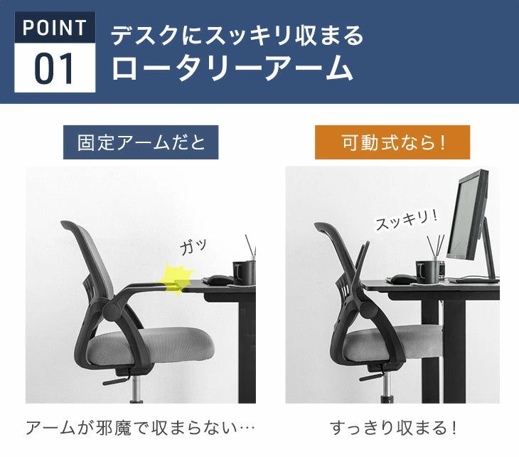

狭い部屋・小柄な人向けオフィスチェアの選び方｜幅・重さ・座面高で選ぶ


こんにちは、カグヤです。狭い部屋と小柄な人向けに、幅・重さ・座面高で椅子を比べています。
ワンルームや寝室の一角に椅子を置くとき、失敗の多くは「置けたけれど動かしにくい」「座面が高くて足が浮く」の2つです。この記事では、幅と奥行、本体の重さ、座面高の下限という3つの数字に絞って、在宅ワーク向けの椅子5脚を比べます。小柄な人向けの座面高の目安もあわせて整理しました。
- とにかく小さく軽く：サンワサプライ OAチェア SNC-A1（W520×D520mm・7.3kg・座面高の下限が約38.5cm）
- 肘掛け付きでデスク下に収めたい：タンスのゲン 跳ね上げ肘チェア（約9kg・跳ね上げ式アーム）
サイズと重さを横並びで比べる
| 商品名 | 幅×奥行 | 本体重量 | 座面高 | 肘掛け |
|---|---|---|---|---|
| サンワサプライ OAチェア SNC-A1 | W520×D520mm | 7.3kg | 約38.5〜47.5cm | なし |
| タンスのゲン 跳ね上げ肘チェア | 幅61×奥行57cm | 約9kg | 42.5〜50cm | 跳ね上げ式 |
| 無印良品 ワーキングアームチェア | W65×D66cm | 11.2kg | 43〜53.5cm | 高さ調節・取り外し可 |
| タンスのゲン 腰楽メッシュチェア | 幅64〜66×奥行64〜66cm | 約15kg | 45〜52cm | 固定式（可動式も選択可） |
| イトーキ サリダYL7R | W655×D670mm | 16.5kg | 43〜53cm | 3D調節 |
| 価格・在庫の確認先：オフィスコムで家具を探す／家具350で家具を探す | ||||
※横にスクロールできます。各社公式サイトの仕様（2026年11月25日確認）をもとに作成。
サイズの数字は、出典つきの表でもう一度確かめられます。置く場所の実測と並べて見てください。
公式スペック横断照合｜出典つきで数値を確認する
サイズと重さに、価格・耐荷重・調整機能と出典を加えた照合表です。各社公式サイトの仕様を横断で照合しました。
| 商品名 | 価格（税込） | 座面高 | 本体重量 | 耐荷重 | 調整機能の要点 | 出典（公式） |
|---|---|---|---|---|---|---|
| イトーキ サリダYL7R | 29,900円 | 約43〜53cm | 16.5kg | ― | ヘッドレスト9段階・ランバー5段階・座面奥行6段階・3Dアーム | イトーキ公式ニュースルーム |
| タンスのゲン 腰楽メッシュチェア | 公式サイトで確認 | 45〜52cm | 約15kg | 約120kg | ランバーサポート付き、肘は固定式（可動式も選択可） | タンスのゲン公式本店 |
| 無印良品 ワーキングアームチェア | 9,990円 | 43〜53.5cm | 11.2kg | ― | 肘の高さ4段階調節・取り外し可 | 無印良品公式ストア |
| タンスのゲン 跳ね上げ肘チェア | 公式サイトで確認 | 42.5〜50cm | 約9kg | 約100kg | 跳ね上げ式アーム | タンスのゲン公式本店 |
| サンワサプライ OAチェア SNC-A1 | 10,450円（メーカー参考価格） | 約38.5〜47.5cm | 7.3kg | 総耐荷重80kg | 背もたれチルト・前後調節 | サンワサプライ公式サイト |
※横にスクロールできます。価格・仕様は2026年11月25日に各社公式サイトで確認した内容です。「―」は公式仕様で確認できなかった項目です。タンスのゲンの2脚は公式通販で価格が変動するため「公式サイトで確認」としています。無印良品の本体重量は販売店の仕様欄による数値です。
ポイントは、座面高は「下限」を見ることです。足裏が床につくかどうかが目安になります。
小柄な人は座面高の「下限」を見る
座面高は範囲で表示されますが、小柄な人にとって大切なのは下限の数字です。足裏全体が床につく高さまで下げられるかどうかで選びましょう。5脚の下限は、サンワ OAチェア SNC-A1が約38.5cmと最も低く、次いでタンスのゲン 跳ね上げ肘チェアの42.5cm、イトーキ サリダYL7Rと無印良品 ワーキングアームチェアの43cmが続きます。タンスのゲン 腰楽メッシュチェアは下限が45cmのため、小柄な人は足が浮かないかを特に確認してください。座面高とあわせて見る疲れにくさの基準は、疲れない椅子の選び方で解説しています。

収納のしやすさは、肘掛けの形でほぼ決まります。跳ね上げ式か取り外し式なら、天板の下に当たらず押し込めます。
デスク下に収めるなら肘掛けの形を見る
仕事終わりに椅子をデスク下へ押し込めると、部屋を広く使えます。そのときに効くのが肘掛けの形です。タンスのゲン 跳ね上げ肘チェアは肘を跳ね上げられるので、天板の下に当たらず収めやすくなっています。無印良品 ワーキングアームチェアは肘を取り外せるため、外してしまえば同じ使い方ができます。固定式の肘掛けは、デスクの天板下の高さと肘の高さを比べてから選びましょう。
狭い部屋向けの椅子を詳しく見る
5位 サンワサプライ OAチェア SNC-A1｜狭い場所・予備用に


SNC-A1の製品写真（サンワサプライ公式サイト）
| 本体サイズ | W520×D520×H720〜810mm |
| 座面高 | 約38.5〜47.5cm |
| 本体重量 | 7.3kg |
| 総耐荷重 | 80kg |
| 機能 | ガス圧リフト、背もたれチルト・前後調節 |
| 価格 | 10,450円（税込・メーカー参考価格）※2026年11月25日に公式サイトで確認 |
向いている人：限られたスペースに作業場所を作りたい人。予備の椅子がほしい人
良い点：この5脚で最も小さく軽い椅子です。座面高の下限が約38.5cmと低いので、低めのデスクや小柄な人にも合わせやすくなっています。
気になる点：肘掛けやヘッドレストはなく、機能は最小限です。1日中座る人や、耐荷重に余裕がほしい人には向きません。総耐荷重80kgを必ず確認してください。
サンワサプライ公式サイトで詳細を見る公式サイトへの通常リンクです4位 タンスのゲン 跳ね上げ肘チェア｜デスク下に収めたい


跳ね上げ肘チェアの製品写真（タンスのゲン公式本店）

ロータリーアーム（跳ね上げ式）の仕組み（タンスのゲン公式本店の説明画像）
| 外寸 | 幅61×奥行57×高さ82.5〜90cm |
| 座面高 | 42.5〜50cm |
| 肘掛け | ロータリーアーム（跳ね上げ式） |
| 本体重量 | 約9kg |
| 耐荷重 | 約100kg |
| キャスター | PUキャスター（床を傷つけにくい素材） |
| その他 | 背面ポケット、ロッキング機能つき |
| 価格 | 公式通販サイトで当日の価格を確認 |
向いている人：仕事終わりに椅子を片づけたい人。椅子をよく動かす人
良い点：約9kgと軽く、肘掛けを跳ね上げればデスク下にすっと収められます。仕事と生活の場所を分けたいワンルームで扱いやすい形です。
気になる点：背もたれは低めで、背中全体や頭まで預ける座り方はできません。耐荷重は約100kgのため、余裕が必要な場合は腰楽メッシュチェアと比べてください。
タンスのゲン公式サイトで詳細を見る公式サイトへの通常リンクです3位 無印良品 ワーキングアームチェア｜部屋になじませたい

| 本体サイズ | W65×D66×H89〜98.5cm |
| 座面高 | 43〜53.5cm |
| 肘掛け | 座面から18〜25cmの範囲で4段階に調節、取り外し可能 |
| 背もたれ | 背メッシュ（通気性を考えた素材） |
| 本体重量 | 11.2kg（販売店の仕様欄による） |
| 価格 | 9,990円（税込）※2026年11月25日に公式ストアで確認 |
向いている人：リビングや寝室の一角で働き、部屋の雰囲気を崩したくない人
良い点：飾らない見た目で生活空間になじみやすく、肘掛けは高さを変えられるうえに取り外しもできます。背メッシュで蒸れにくい点も在宅ワーク向きです。
気になる点：ヘッドレストはなく、背もたれの角度や腰の支えを細かく調節する仕組みもありません。頭や腰まで支えたい人はサリダYL7Rと比べてください。
無印良品公式サイトで詳細を見る公式サイトへの通常リンクです椅子とあわせて、デスク・収納もまとめて探す
椅子を替えるタイミングは、デスクや収納を含めた作業場所全体を見直す良い機会です。オフィス家具をまとめて探すならオフィスコム、価格帯を抑えた家具を探すなら家具350が候補になります。個別商品の価格は日によって変わるため、各サイトで当日の価格・送料・サイズを確認してください。
オフィスコムで家具を探すオフィス家具の通販サイトへ 家具350で家具を探す価格帯を抑えた家具の通販サイトへよくある質問
Q1. 6畳のワンルームに置ける椅子の目安は？
幅と奥行が60cm前後までの椅子なら、デスクと合わせても圧迫感が出にくくなります。サンワ OAチェア SNC-A1（W520×D520mm）やタンスのゲン 跳ね上げ肘チェア（幅61×奥行57cm）が目安になります。
Q2. 小柄でも使える座面高はどのくらいですか？
足裏全体が床につくことが条件です。座面高の下限が40cm前後まで下がる椅子なら合わせやすくなります。この5脚ではサンワ OAチェア SNC-A1の約38.5cmが最も低い下限です。
重さは、動かす頻度で考えると判断しやすくなります。毎日動かすなら軽さ優先、置きっぱなしなら安定感も見ます。
Q3. 重い椅子は狭い部屋で不利ですか？
掃除や模様替えで動かす頻度が高い部屋では不利になります。置きっぱなしで使うなら重さは安定感にもつながるため、使い方次第です。
Q4. キャスターなしの椅子を選んだほうがいいですか？
今回の5脚はすべてキャスター付きです。床の傷が心配な場合は、PUキャスターのタンスのゲン2脚か、チェアマットの併用を検討してください。
まとめです。置く場所の幅と、座面高の下限。この2つを先に確かめると、失敗しにくくなります。
まとめ：狭い部屋は「幅・重さ・座面高の下限」で決まる
狭い部屋と小柄な人の椅子選びは、この3つの数字でほぼ決まります。最小クラスはサンワ OAチェア SNC-A1、肘掛け付きで収納しやすいのはタンスのゲン 跳ね上げ肘チェアです。総合比較は比較トップ、予算別の候補は価格帯別ガイドもあわせてご覧ください。
関連記事
 在宅ワークのデスク・椅子おすすめ比較｜椅子5脚を徹底比較
在宅ワークのデスク・椅子おすすめ比較｜椅子5脚を徹底比較
 疲れないオフィスチェアの選び方とおすすめ5脚
疲れないオフィスチェアの選び方とおすすめ5脚
 オフィスチェア価格帯別おすすめ｜予算で選ぶ椅子ガイド
狭い部屋・小柄な人向けオフィスチェアの選び方
オフィスチェア価格帯別おすすめ｜予算で選ぶ椅子ガイド
狭い部屋・小柄な人向けオフィスチェアの選び方
2026年11月25日：初版を作成しました。仕様は同日に各社公式サイトで確認した内容に基づきます。